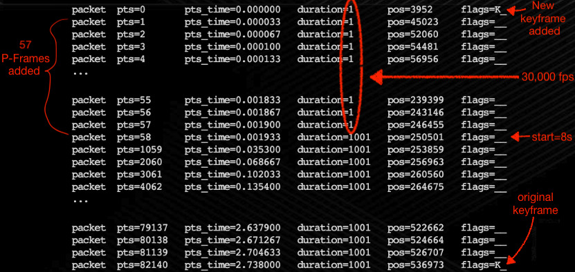
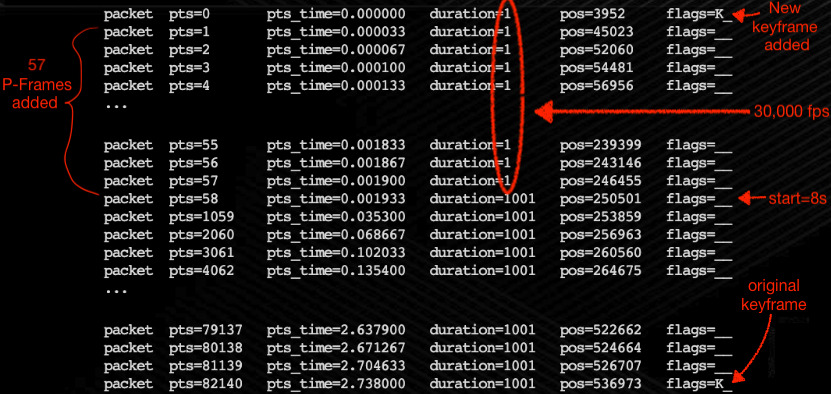

# 30,000 fps Nginx
## To Russia with Love
Demuxed 2021
Tracey Jaquith
slides: tracey.dev.archive.org
---
@tracey_pooh 🧸
Internet Archive 🏛️
TV Architect
· video/audio · devops · javascript ·
slides: https://tracey.dev.archive.org
---
## Act I
# The Setup
## 🎭
---
## WHAT: server-side mp4 clipping?
Serve smaller piece of a video
losslessly, on-demand
• Parse & rewrite mp4 header (moov atom)
· Change table sizes
· Update offsets to A/V packets
• Send smaller .mp4 to browser
---
## WHY: server-side mp4 clipping?
• 1hr HD TV show (~2mbps)
· 4MB moov atom / header
• To play 1 frame for 2h show
· need to download 8MB of header first
• 2min server-side clip
· 150K header
---
## Framing the problem
• IFrame / Keyframe
· full image - like a JPEG
• Predicted Frame
· smaller piece(s) referencing other frames earlier in time
• Bi-directional frame
· can reference prior or later frames
---
## Keyframes

☝🏽 ☝🏽 ☝🏽 ☝🏽
Keyframe · Predicted Frame · Bidirectional Frame · Keyframe
credit: [www.canon.com.hk](https://www.canon.com.hk/cpx/en/technical/va_EOS_Movie_Compression_Options_All_I_and_IPB.html)
---
### Predicted frames
 credit: [nickyguides.digital-digest.com](https://nickyguides.digital-digest.com/keyframes.htm)
---
### I P B frames
credit: [nickyguides.digital-digest.com](https://nickyguides.digital-digest.com/keyframes.htm)
---
### I P B frames
 credit: [wikipedia](https://en.wikipedia.org/wiki/Inter_frame#Typical_Group_Of_Pictures_%28GOP%29_structure)
---
## Server clipping problems
• Keyframes occur every ~3-5 seconds
credit: [wikipedia](https://en.wikipedia.org/wiki/Inter_frame#Typical_Group_Of_Pictures_%28GOP%29_structure)
---
## Server clipping problems
• Keyframes occur every ~3-5 seconds
• Typical 10s max between keyframes
• You could seek 9.9s before a keyframe 🥺
BUT! 🍑
• Browser needs a keyframe to have all the info to start playing 🤦♀️
---
## Roll the Clip!
---
## first 3 keyframes (PTS time):
0.000000s

6.039367s

10.710700s

.. module starts _instead_ at keyframe 6s in
(not right start point)
---
### nginx module: `mp4`
You ask for clip: `?start=8` (* keyframes at 6s and 10.7s)
.. module starts at 8s
(frozen/black until 1st keyframe; audio ok)
---
## Why you Talky?
Server-side mp4 lossless *Precise* seeking is hard.
Most of the time, you jump between keyframes.
---
## 💡 Idea!
Begin at keyframe before desired start and ..
Speedup the FPS of the video frames you dont want to see.
---
### The Tracey Way 👩🚀
You ask for clip: `?start=8` (* keyframes at 6s and 10.7s)
patched module starts at keyframe 6s in
⚡ first 2s of frames are at ⚡ 30,000 fps 😃
---
## Act II
# Hacking
## 👩💻
---
Let's hack some (dyslexia unfriendly)
STTS and STSS moov atoms!
---
## 2009
nginx v0.8
[mod_h264_streaming-2.1rc2](http://h264.code-shop.com/svn/h264/tags/mod_h264_streaming-2.1rc2)
[patch](https://github.com/traceypooh/mod_h264_streaming--intra-keyframes/commits/master/nginx-mod_h264_ASIS.patch): `if (!start && !end) return mp4 // (AS IS)`
(some user .mp4 uploads fail w/ mod_h264..)
---
# 2011
[nginx_mod_h264_streaming-2.2.7.tar.gz](http://h264.code-shop.com/download/nginx_mod_h264_streaming-2.2.7.tar.gz)
---
# ⚡ 2013/10 ⚡
I've added a new "&exact=1" optional arg that is used with "&start=X" arg
that will perceptually skip through any first partial GOP to the exact
start time.
- @see https://github.com/traceypooh/mod_h264_streaming--intra-keyframes
[github/traceypooh/...nginx-mod_h264_exact-start.patch](https://github.com/traceypooh/mod_h264_streaming--intra-keyframes/blob/master/nginx-mod_h264_exact-start.patch)
---
# Exact patch gist
mod_h264 always started at closest keyframe
_at or before_ desired start time.
Patch approach:
• reset audio samples to wanted start time
• video samples parsed into PTS
· so make all undesired initial first video frames have
*just* one PTS value higher than last frame
---
# 🤓
---
unsigned int s = 0, i = 0, j = 0, nRewritten = 0;
for (j = 0; j < stts->entries＿; j++) {
for (i = 0; i < stts->table＿[j].sample＿count＿; i++) {
// begin time-shifting at "start＿sample" bec. mod＿h264＿streaming finds
// the keyframe before the exact start time, and *then* decrements by one.
if (s >= start＿sample && s < start＿exact＿time＿sample) {
samples＿t sample = trak->samples＿[s];
// change current PTS to something *just* less than the PTS of 1st frame
// we want to see fully. prior frames are 1 PTS less than next frame PTS.
uint64＿t pts = sample.pts＿;
uint64＿t pts2 = trak->samples＿[start＿exact＿time＿sample].pts＿ -
(start＿exact＿time＿sample - s);
trak->samples＿[s].pts＿ = pts2;
MP4＿INFO(
"STTS[%d] samples＿[%d].pts＿ = %lu (%0.3fsec) => %lu (%0.3fsec)\n",
j, s, pts, ((float)pts / trak＿time＿scale), pts2,
((float)pts2 / trak＿time＿scale));
nRewritten++;
}
s++;
}
}
if (nRewritten) MP4＿WARNING("%u FRAMES FAST-FORWARDED (APPROX %2.1f sec)",
nRewritten, nRewritten/29.97);
---
# 2014
exact end patch from Péter Vajda, PhD, Stanford
[github/traceypooh/...nginx-mod_h264_exact-end.patch](https://github.com/traceypooh/mod_h264_streaming--intra-keyframes/blob/master/nginx-mod_h264_exact-end.patch)
---
# 2017
chrome duration patch
[github/traceypooh/...nginx-mod_h264_chrome-duration.patch](https://github.com/traceypooh/mod_h264_streaming--intra-keyframes/blob/master/nginx-mod_h264_chrome-duration.patch)
---
# 2020 / 9
- nginx rebuild to use [ipscrub](https://github.com/masonicboom/ipscrub) module
- ubuntu focal
- deployed to all archive.org nodes
---
# 2021 / 5 / 11
nginx `ipscrub` patch improvements
(more entropy, same salt/crypt as prior `lua` IP hider)
---
# 🧟♀️ 7 days later 🧟♂️
---
## 2021 / 5 / 18
## 😳 🥺
git commit -m 'workaround (TV) mp4 clips with "&exact=1" having some kind of strange new double free() segfault - WEBDEV-4445'
🤦♀️ 😰
🥵
🥀
---
# 😰
... 98% of segfaults fixed by patching & _completely_ taking over `mod_h264_streaming`'s memory management.
but that 2%...
---
## Look into nginx `mp4` module
### Figure out how to patch & test
- 3500 🥺 line single `.c` file
_oh sh*t_
BUT! 🍑
Best C code I've ever seen
• reads top-to-bottom
• airtight
• intimidating
• exciting
---
### C examples
// struct definition
typedef struct { .. } ngx_mp4_stts_atom_t;
// struct defn right before 👇🏽
ngx_http_mp4_read_stts_atom(
ngx_http_mp4_file_t *mp4,
uint64_t atom_data_size) { .. }
// just after the ☝🏽 reader is the updater 👇🏽
ngx_http_mp4_update_stts_atom(
ngx_http_mp4_file_t *mp4,
ngx_http_mp4_trak_t *trak) { .. }
// finally, ☝🏽 calls cropper 👇🏽
ngx_http_mp4_crop_stts_data(
ngx_http_mp4_file_t *mp4,
ngx_http_mp4_trak_t *trak,
ngx_uint_t start) { .. }
☝🏽 and there's our start arg
---
## patchy 🩹
- had read file top-to-bottom
- plan attack (1d)
- get "exact start" working (1d) 🙌
---
## 2021 / 6 / 1
```sh
git commit -m '
Move from long abandoned (tracey as sole maintainer) mod_h264_streaming module
to nginx "house version" (optional) http_mp4_module.
Like the older, the newer module still needs "&exact=1" precise start time patch
(though newer module already has an "exact end" time feature - a nice upgrade).
Will try to get patch refined and "upstream" to nginx proper ..
'
```
[github/traceypooh/...nginx-mp4.patch](https://github.com/traceypooh/mod_h264_streaming--intra-keyframes/blob/master/nginx-mp4-2021-06-03.patch)
---
## 🏛️
and thus archive.org moves to nginx `mp4` module ..
(hand-patched exact starts)
---
## Act III
# Swimming upstream
## 🏊♀️
---
## Atoms ⚛️
Overall `moov` atom (header) has atoms we must update
• STTS - Time-To-Sample
· duration of each sample/frame
• STSS - Sync Sample
· List of sample number of each **keyframe**
• ctts - Composition Time to Sample
• stsc - Sample-To-Chunk
• stsz - Sample Size
• co64
• stco - Chunk Offset
• stbl - Sample Table
• minf - Media INFormation
• mdia - Media
• trak - Track
• mdat - Media DATa
---
## Atoms

• update STTS - Time-To-Sample
· list of frames & durations
• table of [8 byte] entries, each entry is:
· [4B] sample count
· [4B] sample duration
• simple mp4 often a _single entry_ table:
· [4B] number of frames/samples in video
· [4B] 1001 duration
US TV - 29.97 fps == 30,000 / 1001 (30000 is timescale)
---
## Atoms
parse STSS - Sync Sample entries - list of keyframes
• start with first keyframe
· end once hit desired start
• if desired start is keyframe
· nothing to do
• else "save" prior keyframe location
• now we know [count] frames to move:
· from: 30fps, duration 1001 (typical)
· to: ~30000fps, duration 1 (typical)
• add new STTS entry: [count][1]
---
## Party crasher
• mercurial
· hg clone http://hg.nginx.org/nginx
• they want patches emailed to devel list 🤔
· with `patchbomb`
• need to figure out `sendmail`..
---
### .hg/hgrc
```ini
[paths]
default = http://hg.nginx.org/nginx
[ui]
username = Tracey Jaquith <tracey@archive.org>
[extensions]
hgext.patchbomb =
```
```ini
[email]
to = nginx-devel@nginx.org
from = Tracey Jaquith <tracey@archive.org>
method = smtp
[smtp]
host = mail.archive.org
tls = starttls
username = tracey@archive.org
```
---
## (my notes)
```bash
hg commit
hg log | head # get hash like: 7872:1879d49fe0cf
hg email --test 7872:1879d49fe0cf
hg email 7872:5da9c62fa610
```
---
### The Patch - 2021 / 6 / 3
[Add optional "mp4_exact_start" nginx config off/on to show video between keyframes.](
https://github.com/traceypooh/mod_h264_streaming--intra-keyframes/blob/master/nginx-mp4-2021-06-03.patch)
```text
archive.org has been using mod_h264_streaming with a similar "exact start"
patch from me since 2013.
We just moved to nginx mp4 module and are using this patch.
The technique is to find the video keyframe just before the desired "start" time,
and send that down the wire so video playback can start immediately.
Next calculate how many video samples are between the keyframe and desired
"start" time and update the STTS atom where those samples move the duration
from (typically) 1001 to 1.
This way, initial unwanted video frames play at ~1/30,000s --
so visually the video & audio start playing immediately.
```
```text
Tested on linux and macosx.
You can see an example before/after here
(nginx binary built with mp4 module + patch):
```
https://archive.org/~tracey/ng.mp4?start=8&end=30
https://archive.org/~tracey/ng.mp4?start=8&end=30&exact=1
(this is me: https://github.com/traceypooh )
---
## First Contact
• [1st guy]: "why not just use a smart client/browser?"
• "huh? then why would i ever use nginx mp4 module?"
• "good point.."
• gets me to Roman:
· #4 committer at nginx
· #2 committer in mp4 module
---
## Refinements
- Roman back & forth, wizardly points out simplifications
- I post [revised patch](https://github.com/traceypooh/mod_h264_streaming--intra-keyframes/blob/master/nginx-mp4-2021-06-03.patch) 6/15 (138 lines)
---
## Reply 2021 / 6 / 28
- Roman posts _his_ revised patch (234 lines)
- mentioned: ["your patch title exceeds 67 char limit"](http://nginx.org/en/docs/contributing_changes.html) 😞
- method renamed: `ngx_http_mp4_rewind_stts_data()`
- new name / config setting: `mp4_seek_key_frame`
- nginx [mp4 config](https://nginx.org/en/docs/http/ngx_http_mp4_module.html) should look like:
```ini
location /video/ {
mp4;
mp4_buffer_size 1m;
mp4_max_buffer_size 5m;
mp4_seek_key_frame on;
}
```
- "Based on a patch by Tracey Jaquith."
---
## [2021 / 9 / 7](https://forum.nginx.org/read.php?29,291866,292368#msg-292368) 🦗
- "Can you test my patch, tracey?" 🙃
- 2 months, 50% vacation 🏖️ go by...
· (exercise 1-3h/day, lose 15 pounds ;-)
- "tested heavily on linux and macosx -- looks good!"
- "If I won't be a committer, can also credit Internet Archive?"
- "Based on a patch by Tracey Jaquith, Internet Archive"
---
## 2021 / 9 / 9
" We’ll do an internal review of the patch now and then proceed to committing it "
---
## 2021 / 9 / 9
" We had a discussion here about enabling this feature by default
or maybe making this the only supported behavior.
What do you think? "
---
 ---
## Appendix for Accountants
---
## Packets - before
```bash
ffprobe -show_entries packet=pts,pts_time,duration,pos,flags -v 0 -hide_banner \
'https://archive.org/~tracey/ng.mp4?start=8&end=10.8' -select_streams v \
-print_format compact |awk -F '|' '{printf "%-8s%-12s%-20s%-16s%-13s%-8s\n",$1,$2,$3,$4,$5,$6}'
```
```text
packet pts=0 pts_time=0.000000 duration=1001 pos=3854 flags=__
packet pts=1001 pts_time=0.033367 duration=1001 pos=7212 flags=__
packet pts=2002 pts_time=0.066733 duration=1001 pos=10316 flags=__
packet pts=3003 pts_time=0.100100 duration=1001 pos=13913 flags=__
packet pts=4004 pts_time=0.133467 duration=1001 pos=18028 flags=__
...
```
```text
packet pts=79079 pts_time=2.635967 duration=1001 pos=276015 flags=__
packet pts=80080 pts_time=2.669333 duration=1001 pos=278017 flags=__
packet pts=81081 pts_time=2.702700 duration=1001 pos=280060 flags=__
packet pts=82082 pts_time=2.736067 duration=1001 pos=290326 flags=K_
```
---
## Packets - after - 58 video frames adedd
```bash
ffprobe -show_entries packet=pts,pts_time,duration,pos,flags -v 0 -hide_banner \
'https://archive.org/~tracey/ng.mp4?start=8&end=10.8&exact=1' -select_streams v \
-print_format compact |awk -F '|' '{printf "%-10s%-14s%-22s%-18s%-15s%-10s\n",$1,$2,$3,$4,$5,$6}'
```
```text
packet pts=0 pts_time=0.000000 duration=1 pos=3952 flags=K_
packet pts=1 pts_time=0.000033 duration=1 pos=45023 flags=__
packet pts=2 pts_time=0.000067 duration=1 pos=52060 flags=__
packet pts=3 pts_time=0.000100 duration=1 pos=54481 flags=__
packet pts=4 pts_time=0.000133 duration=1 pos=56956 flags=__
...
```
```text
packet pts=55 pts_time=0.001833 duration=1 pos=239399 flags=__
packet pts=56 pts_time=0.001867 duration=1 pos=243146 flags=__
packet pts=57 pts_time=0.001900 duration=1 pos=246455 flags=__
packet pts=58 pts_time=0.001933 duration=1001 pos=250501 flags=__
packet pts=1059 pts_time=0.035300 duration=1001 pos=253859 flags=__
packet pts=2060 pts_time=0.068667 duration=1001 pos=256963 flags=__
packet pts=3061 pts_time=0.102033 duration=1001 pos=260560 flags=__
packet pts=4062 pts_time=0.135400 duration=1001 pos=264675 flags=__
...
```
```text
packet pts=79137 pts_time=2.637900 duration=1001 pos=522662 flags=__
packet pts=80138 pts_time=2.671267 duration=1001 pos=524664 flags=__
packet pts=81139 pts_time=2.704633 duration=1001 pos=526707 flags=__
packet pts=82140 pts_time=2.738000 duration=1001 pos=536973 flags=K_
```
---
## Packets - after - 58 video frames adedd

---
# The End
Thanks!
---
## Appendix for Accountants
---
## Packets - before
```bash
ffprobe -show_entries packet=pts,pts_time,duration,pos,flags -v 0 -hide_banner \
'https://archive.org/~tracey/ng.mp4?start=8&end=10.8' -select_streams v \
-print_format compact |awk -F '|' '{printf "%-8s%-12s%-20s%-16s%-13s%-8s\n",$1,$2,$3,$4,$5,$6}'
```
```text
packet pts=0 pts_time=0.000000 duration=1001 pos=3854 flags=__
packet pts=1001 pts_time=0.033367 duration=1001 pos=7212 flags=__
packet pts=2002 pts_time=0.066733 duration=1001 pos=10316 flags=__
packet pts=3003 pts_time=0.100100 duration=1001 pos=13913 flags=__
packet pts=4004 pts_time=0.133467 duration=1001 pos=18028 flags=__
...
```
```text
packet pts=79079 pts_time=2.635967 duration=1001 pos=276015 flags=__
packet pts=80080 pts_time=2.669333 duration=1001 pos=278017 flags=__
packet pts=81081 pts_time=2.702700 duration=1001 pos=280060 flags=__
packet pts=82082 pts_time=2.736067 duration=1001 pos=290326 flags=K_
```
---
## Packets - after - 58 video frames adedd
```bash
ffprobe -show_entries packet=pts,pts_time,duration,pos,flags -v 0 -hide_banner \
'https://archive.org/~tracey/ng.mp4?start=8&end=10.8&exact=1' -select_streams v \
-print_format compact |awk -F '|' '{printf "%-10s%-14s%-22s%-18s%-15s%-10s\n",$1,$2,$3,$4,$5,$6}'
```
```text
packet pts=0 pts_time=0.000000 duration=1 pos=3952 flags=K_
packet pts=1 pts_time=0.000033 duration=1 pos=45023 flags=__
packet pts=2 pts_time=0.000067 duration=1 pos=52060 flags=__
packet pts=3 pts_time=0.000100 duration=1 pos=54481 flags=__
packet pts=4 pts_time=0.000133 duration=1 pos=56956 flags=__
...
```
```text
packet pts=55 pts_time=0.001833 duration=1 pos=239399 flags=__
packet pts=56 pts_time=0.001867 duration=1 pos=243146 flags=__
packet pts=57 pts_time=0.001900 duration=1 pos=246455 flags=__
packet pts=58 pts_time=0.001933 duration=1001 pos=250501 flags=__
packet pts=1059 pts_time=0.035300 duration=1001 pos=253859 flags=__
packet pts=2060 pts_time=0.068667 duration=1001 pos=256963 flags=__
packet pts=3061 pts_time=0.102033 duration=1001 pos=260560 flags=__
packet pts=4062 pts_time=0.135400 duration=1001 pos=264675 flags=__
...
```
```text
packet pts=79137 pts_time=2.637900 duration=1001 pos=522662 flags=__
packet pts=80138 pts_time=2.671267 duration=1001 pos=524664 flags=__
packet pts=81139 pts_time=2.704633 duration=1001 pos=526707 flags=__
packet pts=82140 pts_time=2.738000 duration=1001 pos=536973 flags=K_
```
---
## Packets - after - 58 video frames adedd

---
# The End
Thanks!